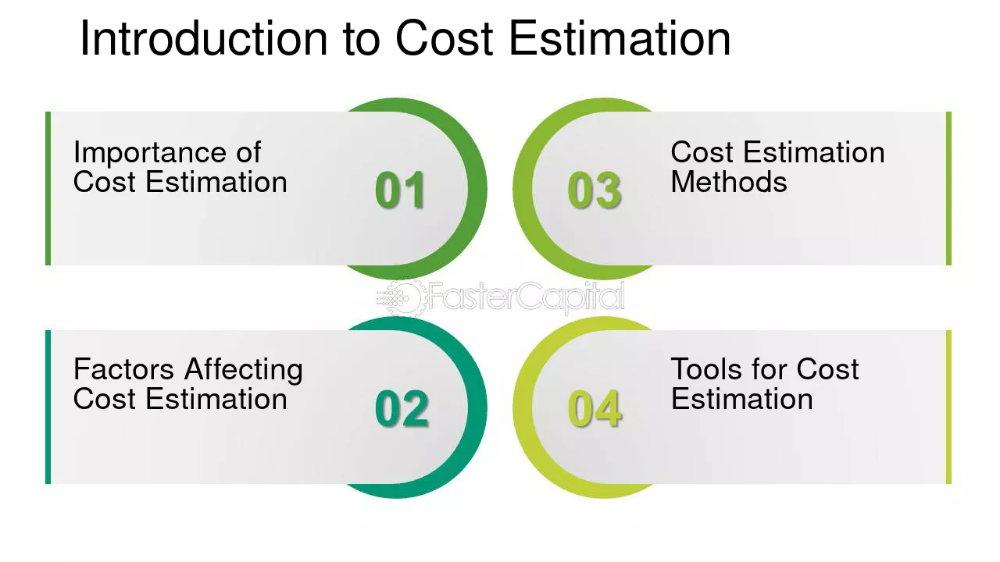
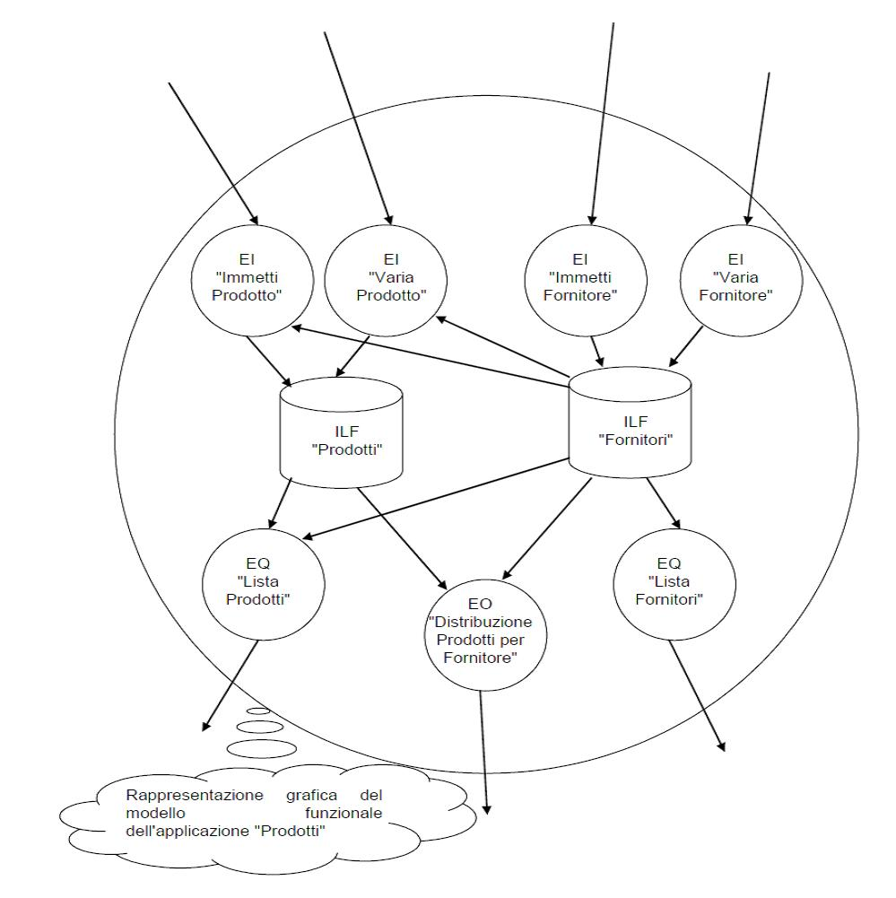
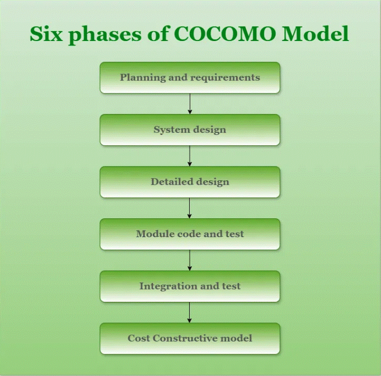

1. Introduzione alla Stima dei Costi
La stima dei costi nello sviluppo software rappresenta una delle attività più importanti e critiche nell'ingegneria del software. Essa implica prevedere accuratamente le risorse economiche necessarie per completare un progetto. La legge di Brooks, ad esempio, suggerisce che aggiungere personale a un progetto già in ritardo può rallentarlo ulteriormente. Anche la regola 90-90 di Tom Cargill evidenzia la complessità della stima del tempo, affermando che il 90% del codice richiede il 90% del tempo, e il restante 10% ne richiede altrettanto.
2. Fonti e Fattori di Costo
I costi dello sviluppo software derivano da varie fonti tra cui:
- Personale tecnico e di supporto
- Risorse hardware e software
- Materiale di consumo
- Costi generali
- Manutenzione e analisi di mercato
- Indisponibilità del sistema
Fattori principali che influenzano tali costi:
- Dimensione e complessità del software
- Stabilità dei requisiti
- Capacità e coordinamento del team
- Tecnologie impiegate
3. Metriche di Stima
Metriche Dimensionali (LOC)
Queste metriche utilizzano il numero di linee di codice (LOC, SLOC, DSI) come indicatore principale. Permettono di calcolare:
- Produttività (LOC per mese-uomo)
- Qualità (numero di errori per LOC)
- Costo unitario (euro per LOC)
Metriche Funzionali (Function Points)
I Function Points misurano il software in base alle sue funzionalità indipendentemente dalla tecnologia. La formula per il calcolo finale è FP = UFP × TCA, dove UFP rappresenta i Function Points non aggiustati e TCA il fattore di complessità tecnica.
4. Metodi di Stima
Metodi Top-Down
I metodi top-down partono da una stima globale, basata su progetti precedenti simili, per poi suddividerla in sottoprogetti o componenti specifici. Utilizzano formule come M = M₀ × (1 + a) × (1 - r).
Metodi Bottom-Up
Questi metodi partono dalla scomposizione dettagliata del progetto attraverso una Work Breakdown Structure (WBS). Si stimano individualmente tutte le attività con tecniche come il metodo PERT, usando la formula D = (o + 4v + p)/6 per una stima ponderata.
5. Modelli Costruttivi: COCOMO e COCOMO II
Il modello COCOMO stima sforzo e tempo in base alla dimensione del software (KLOC). COCOMO II, più avanzato, introduce ulteriori dettagli con Application Composition Model, Early Design Model e Post-Architecture Model, e permette correzioni dettagliate basate su riuso e manutenzione.
6. Considerazioni Finali
La stima dei costi nel software engineering richiede esperienza e modelli accurati. L’uso integrato di modelli come COCOMO II e Function Points migliora notevolmente l'accuratezza delle previsioni e permette decisioni più consapevoli durante lo sviluppo del progetto.